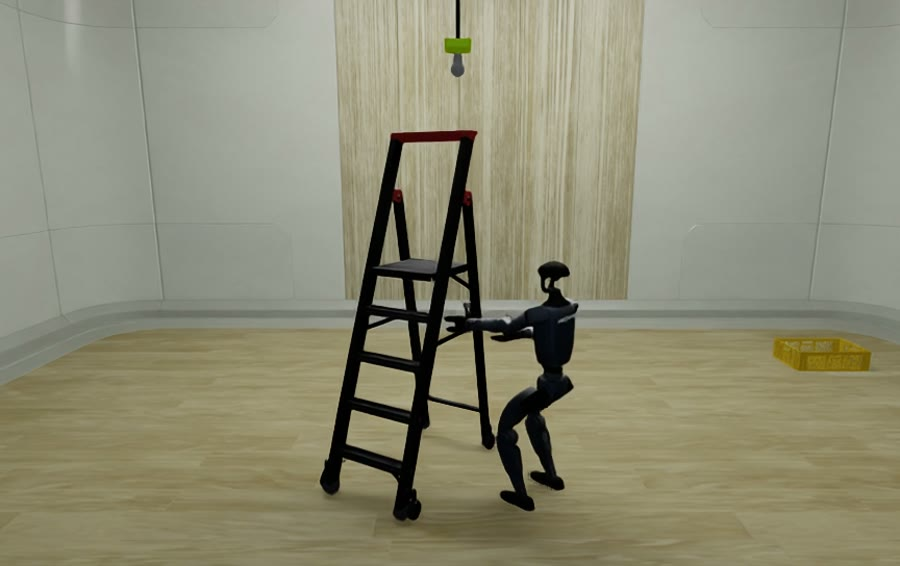
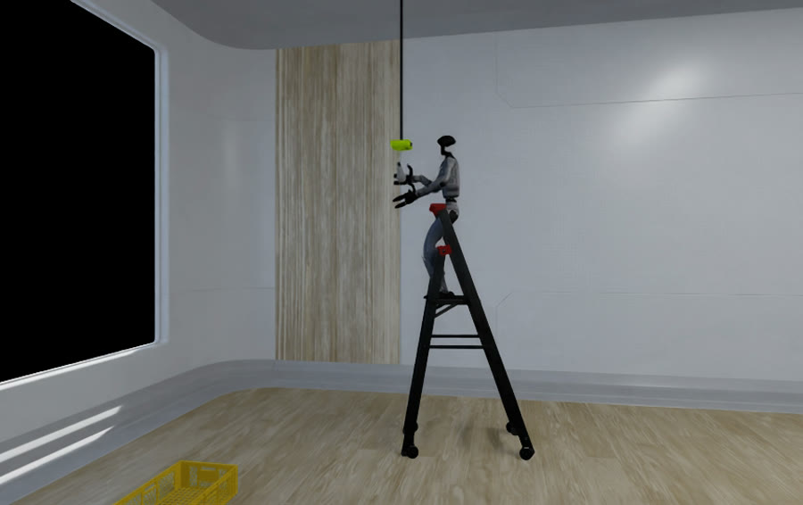
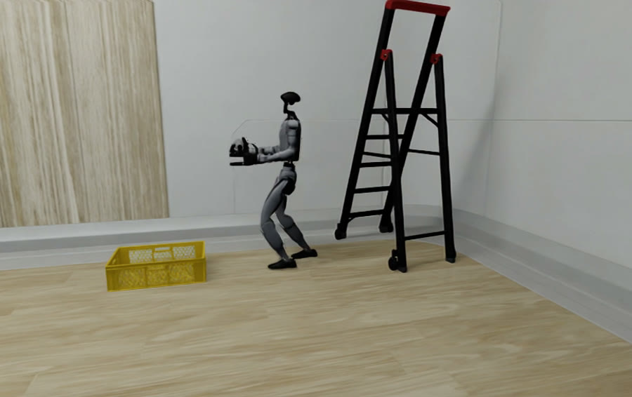
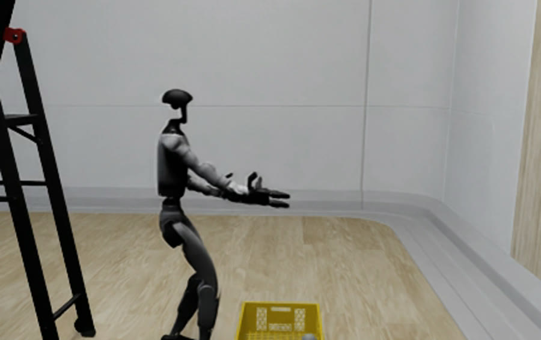
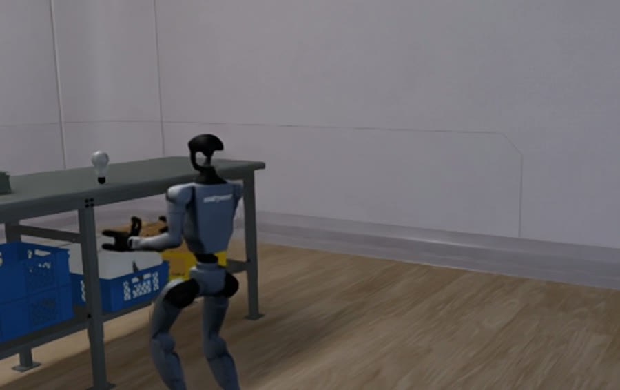
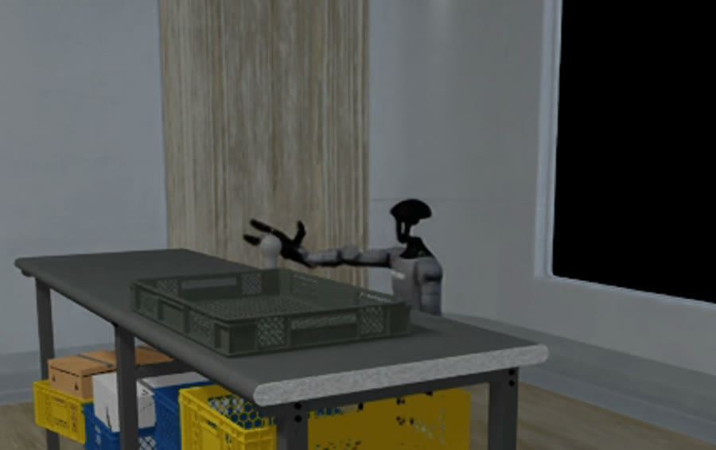
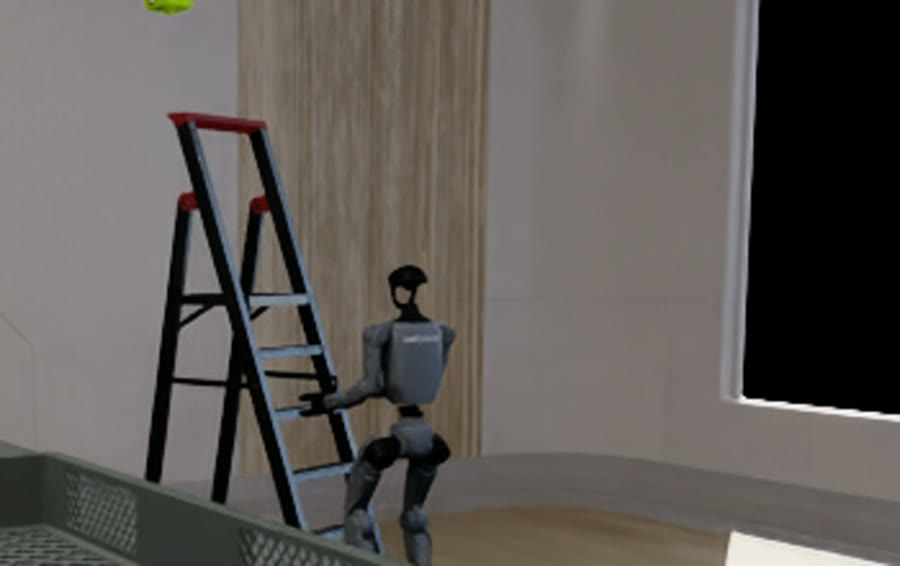
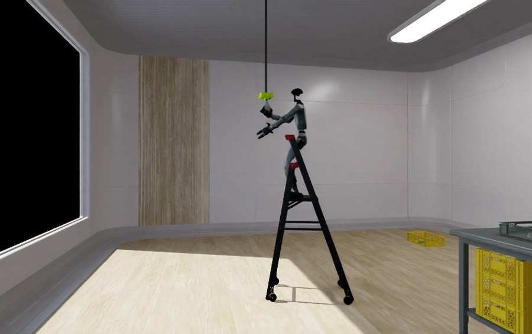
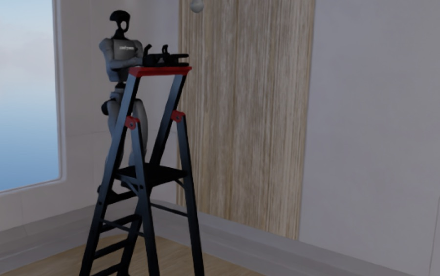
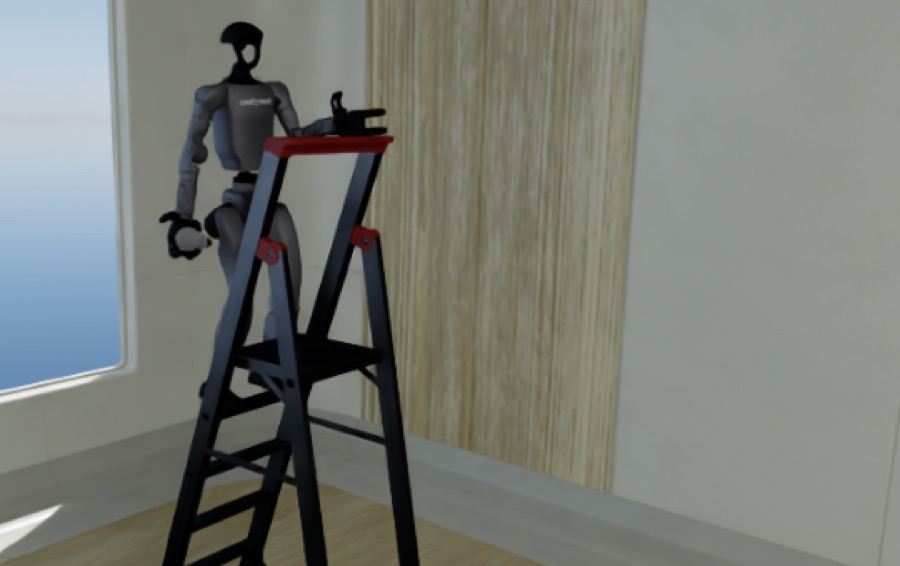

A Unitree G1 positions a step ladder, climbs it, and replaces an overhead bulb — in one uncut episode.
1HawAII, University of Hawaiʻi at Mānoa 2Independent Researcher 3Purdue University
*The first four authors contributed equally; their order is alphabetical by surname.
Existing benchmarks evaluate tabletop manipulation, flat-floor household activity, or humanoid locomotion and manipulation as separate task groups; none scores vertical mobility and dexterous work on a fragile payload in one long-horizon episode.
We present Fiatlux, a light-bulb replacement benchmark built on NVIDIA Isaac Lab. In one episode, a Unitree G1 humanoid positions a step ladder under a ceiling or wall fixture, climbs it, exchanges a spent bulb in a socket for a fresh one, and leaves the spent one in a disposal crate. We decompose the episode into twelve subtask environments scored on difficulty-weighted gates. The goal is a successful replacement, with the fresh bulb seated, the spent one disposed of, neither dropped, and a fragility bound not crossed. Runs that fall short can earn partial credit.
Observations are split into a standard mode (signals a physical robot could sense or estimate) and a privileged mode (exact simulator state). We specify the evaluation protocol and provide reference baseline implementations spanning RSL-RL PPO, zero-shot NVIDIA GR00T N1.7 Vision-Language-Action (VLA) models, and whole-body controllers. Additionally, we provide the teleoperated recordings used to specify and check the success gates.
The subtasks are not of equal difficulty, so their success rates are not averaged. Each carries a difficulty weight, and each gate is declared as a list of conjuncts, so an episode that satisfies part of a gate is distinguishable from one that achieved nothing.
Achievability is established by driving the robot through each subtask under teleoperation to its success gate. A take counts only if it satisfies every condition of the gate, sustained for the required window where one applies, and takes are recorded across multiple layout seeds so a success cannot depend on one favorable spawn.
| ID | Subtask | Control mode | Weight | Takes | Full credit |
|---|---|---|---|---|---|
| S01 | Move Ladder | Flat nav | 2.25 | 11 | 10 |
| S02 | Climb Ladder | Climbing | 3.00 | — | — |
| S03 | Remove Old Bulb | Manipulation | 4.20 | 12 | 10 |
| S04 | Descend with Bulb | Climbing | 4.50 | — | — |
| S05 | Carry Bulb to Disposal | Flat nav | 1.50 | 10 | 10 |
| S06 | Dispose Bulb | Manipulation | 1.80 | 12 | 10 |
| S07 | Approach New Bulb | Flat nav | 1.00 | 10 | 10 |
| S08 | Grab New Bulb | Manipulation | 1.40 | 10 | 10 |
| S09 | Carry Bulb to Ladder | Flat nav | 1.50 | 10 | 10 |
| S10 | Climb with Bulb | Climbing | 4.50 | — | — |
| S11 | Screw in Bulb | Manipulation | 5.40 | 32 | 10 |
| S12 | Climb Down | Climbing | 3.00 | — | — |
| Total | 34.05 | 107 | 80 |
One frame from each subtask that has a full-credit take. Every frame below comes from a take that fires that subtask's gate.










The two stance frames are recorded with the robot placed on the top tread by inverse kinematics, with no leg joints in the action space. They show that it holds the on-ladder stance with and without the bulb. The transitions to and from that stance — the climbs themselves — are not demonstrated, and neither frame is an achievability take for S02 or S10.
Each policy runs one episode per subtask at each of four layout seeds. Rollout trajectories are recorded as bags and scored offline, so the same recording can be re-scored under different rules without re-running the simulator. groot uses the base checkpoint without fine-tuning and a per-subtask language instruction; zero holds joint position commands at zero offset and random samples each action uniformly from [−1, 1].
| ID | Subtask | GR00TN1.7 zero-shot | Zerono action | Randomuniform action | Teleoperationhuman expert |
|---|---|---|---|---|---|
| S01 | Move Ladder | 0.00 | 0.00 | 0.00 | 1.00 |
| S02 | Climb Ladder | 0.00 | 0.00 | 0.00 | — |
| S03 | Remove Old Bulb | 0.06 ± 0.12 | 0.00 | 0.06 ± 0.12 | 0.90 ± 0.25 |
| S04 | Descend with Bulb | 0.25 | 0.12 ± 0.14 | 0.00 | — |
| S05 | Carry Bulb to Disposal | 0.25 | 0.25 | 0.00 | 1.00 |
| S06 | Dispose Bulb | 0.00 | 0.12 ± 0.08 | 0.33 | 0.85 ± 0.34 |
| S07 | Approach New Bulb | 0.00 | 0.06 ± 0.12 | 0.06 ± 0.12 | 1.00 |
| S08 | Grab New Bulb | 0.00 | 0.00 | 0.00 | 1.00 |
| S09 | Carry Bulb to Ladder | 0.25 | 0.12 ± 0.14 | 0.00 | 1.00 |
| S10 | Climb with Bulb | 0.19 ± 0.12 | 0.19 ± 0.12 | 0.00 | — |
| S11 | Screw in Bulb | 0.00 | 0.12 ± 0.14 | 0.19 ± 0.12 | 0.57 ± 0.45 |
| S12 | Climb Down | 0.00 | 0.00 | 0.00 | — |
| Weighted total | 0.0876 ± 0.0261 | 0.0861 ± 0.0322 | 0.0569 ± 0.0293 | 0.8419* |
Success rate is 0.00 for all three released baselines on every subtask, at every seed, confirmed independently from every recorded trajectory bag. Their non-zero entries above are gate progress, not completions — the score channel keeps an episode's best moment, so a failing policy banks partial credit for any gate condition it satisfies.
Zero-shot GR00T N1.7 is not separable from zero, which commands no action: their weighted scores, 0.0876 ± 0.0261 and 0.0861 ± 0.0322, differ by less than either standard deviation. Teleoperation reaches the success gate on eight of the twelve subtasks, leaving those eight achievable but unsolved, and climbing not yet demonstrated.
All three fail differently. With random, ten of the twelve subtasks end in a fall, none averaging more than 50 control steps. With zero, six do, and mean episode length runs from 38 to 6000 control steps against random's 19 to 46 — the robot stays upright long enough for another termination to fire first. Where the bulb is carried on or at the ladder, it is crushed or dropped before the robot falls. Elsewhere the robot neither falls nor succeeds, and runs out the time budget. For teleoperation, most failures are bulb crushes.
Each success gate is a list of conjuncts. With n conjuncts, cmax the most held simultaneously at any step and c0 the number held at reset, gate progress is the clamped ratio (cmax − c0) / (n − c0), combined with the subtask's difficulty weight into the weighted score.
An episode is broken if peak contact force over both hands, across all steps and all 34 hand and wrist bodies, exceeds 50 N. Both hands are read, since scoring one arm would record a left-handed crush as clean. Finger torque saturates at 0.5 N·m, stalling a closing finger at roughly 12 N of grip, so the 35 g bulb can be held and released well inside the bound.
Success and the violation rates are computed independently, so a policy that seats the bulb by crushing it registers a success and a broken episode at once. Clean success rate — fresh bulb seated, spent one disposed of, neither dropped, fragility bound never crossed — is therefore the primary number.
Standard carries only what a physical robot could sense or estimate: joint positions and velocities across 53 actuated DoF, base angular velocity from the IMU, projected gravity, estimated base height and velocity, contact forces, RGB and lidar range. The G1 has no foot sensor, so foot contact is estimated from ankle joint torques — in simulation as on hardware, with the policy consuming the same signal in both.
Privileged carries exact simulator state for critic training and privileged baselines: absolute 6D poses of robot, ladder, fixture, both bulbs and the crate, plus the score-relevant distances and seating flags. Every baseline declares which mode it consumes, so sim-to-real claims are checkable against the observation group.
Requires uv, an NVIDIA GPU with a CUDA 12.8-capable driver, and gsutil for the assets. Isaac Sim 5.1 and Isaac Lab 2.3.2 are pinned in uv.lock — no manual Isaac Lab install.
# 1. Build the environment (first run pulls ~10 GB).
uv sync
# 2. Pull the USD assets (G1, bulb/socket, ladder).
./assets/download_assets.sh
# 3. Sanity-check registration.
uv run python scripts/list_envs.py
uv run python scripts/verify_scene.py --headless
# 4. Record a run, then score it offline (no simulator needed to score).
uv run python scripts/record_run.py --task FIATLUX-Replace-v0 --policy random \
--episodes 2 --record bag --headless --enable_cameras --out logs/runs/random0
uv run python scripts/score.py logs/runs/random0Full setup, teleoperation and the GR00T baseline server are documented in getting_started.md.
@misc{bushuyeu2026fiatlux,
title = {Fiatlux: A Long-Horizon Benchmark for Humanoid
Ladder Climbing and Light-Bulb Replacement},
author = {Bushuyeu, Pavel and Chen, Yujin and Nikolaev, Anton
and Shu, Brian and Molybog, Igor},
year = {2026},
howpublished = {\url{https://fiatlux-bench.github.io}}
}This work was supported by the National Science Foundation NRT-AI 2244574 and through allocation number CIS240027 from the Advanced Cyberinfrastructure Coordination Ecosystem: Services & Support (ACCESS) program, which is supported by National Science Foundation grants #2138259, #2138286, #2138307, #2137603 and #2138296. The technical support and advanced computing resources from University of Hawaii Information Technology Services — Research Cyberinfrastructure, funded in part by the National Science Foundation CC* awards #2201428 and #2232862, are gratefully acknowledged. This work was supported by computational resources provided by NPC Labs through the B3IQ infrastructure platform.